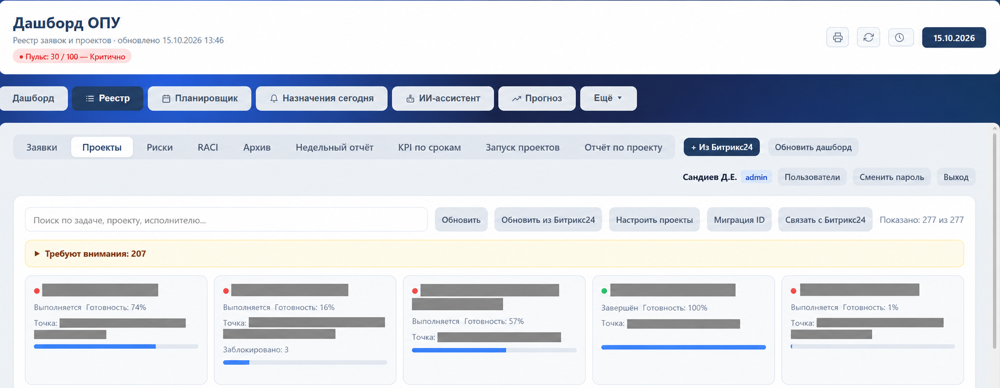
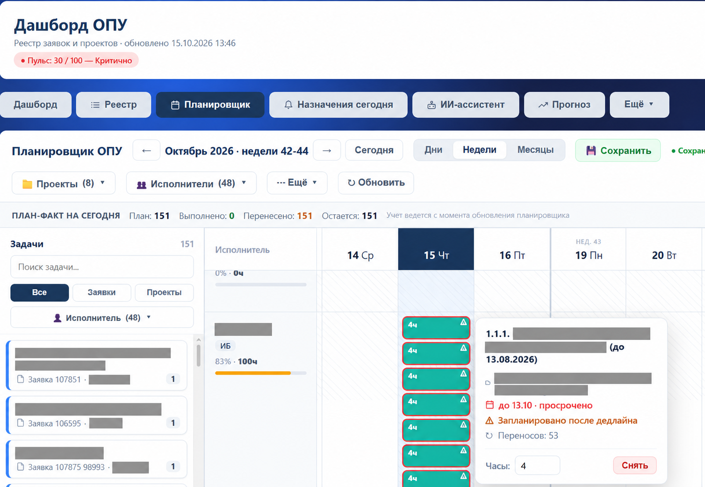
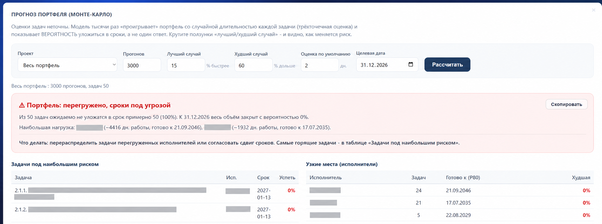
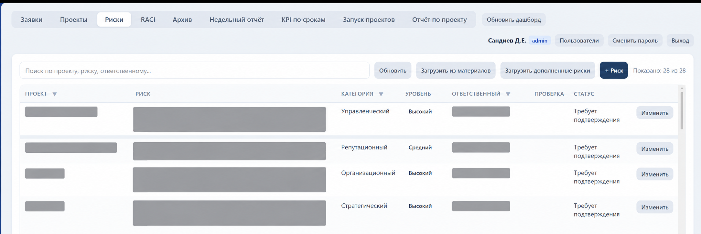
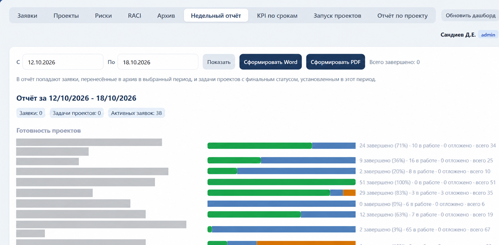
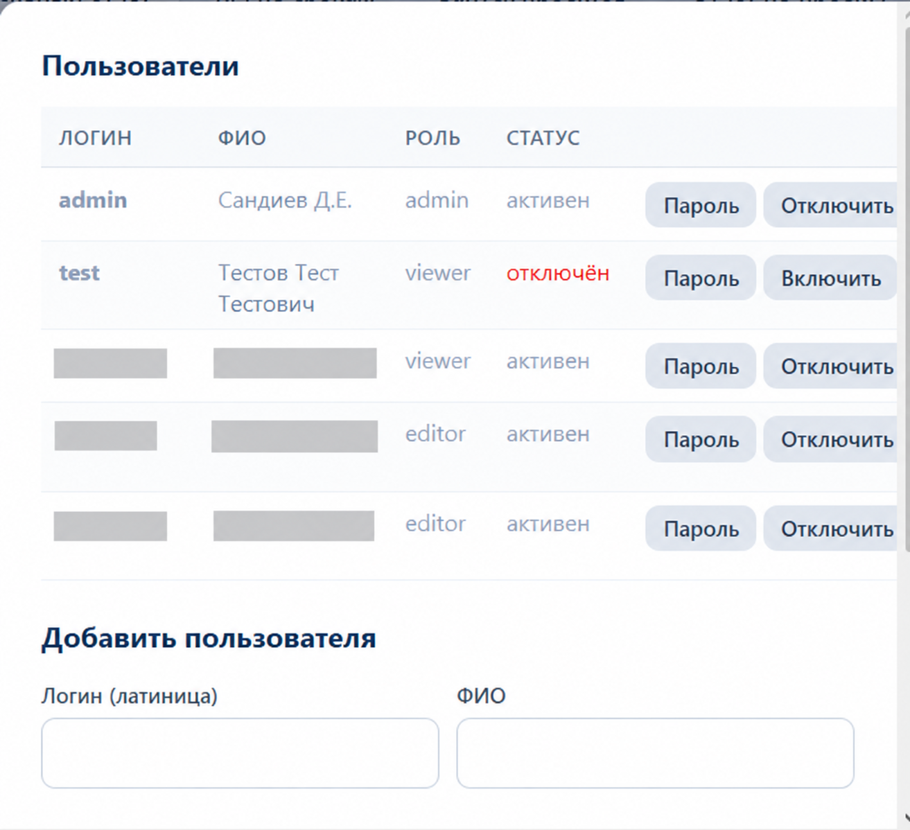

Задача
Что мешало работе
Нужно было сократить время на первичную обработку заявки и подготовку отчётов, не заменяя Битрикс24 как источник сроков и исполнителей. При этом данные о загрузке, рисках и ходе проектов должны были быть доступны отделу в одном месте.
Моя работа
Собрал заявки, проекты и отчёты в одной системе
Я описал шаги работы с заявкой, собрал требования и организовал создание ОПУ. В системе появились реестр заявок, проекты и задачи, планировщик загрузки, прогноз портфеля, риски, контрольные точки, дашборд, база знаний, отчётность и управление доступом.
При обмене с Битрикс24 нельзя было полагаться на похожие названия проектов. Для связи использовали устойчивые идентификаторы, а спорные совпадения оставляли сотруднику. ОПУ читала данные из Битрикс24, но не меняла задачи в нём.
Интерфейс ОПУ
Система в работе
Обезличенные изображения подготовлены на основе рабочих скриншотов. Даты, числа и статусы сохранены; фамилии коллег и рабочие формулировки скрыты. Нажмите на изображение, чтобы открыть его целиком.






AI
Где помогал AI
Проверка заявки
Функция на Groq API читала текст заявки и показывала, какой информации не хватает.
Черновики поручений
Из протокола встречи система готовила редактируемые черновики задач.
Проверка
Что проверялось вручную
- Сотрудник решал, нужно ли дополнить заявку по подсказке AI.
- Черновики поручений редактировались перед переносом в работу.
- Неоднозначные совпадения с проектами в Битрикс24 разбирались человеком.
Результат
Что получилось
Цифры — сравнение типовых сценариев до и после внедрения всей системы ОПУ, а не результат одной AI-функции.
Отдел получил общие реестры заявок и проектов, стал видеть загрузку и риски в одной системе и тратить меньше времени на ручную сверку перед отчётом.